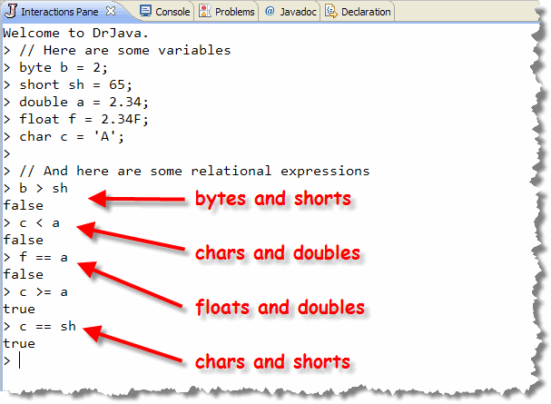
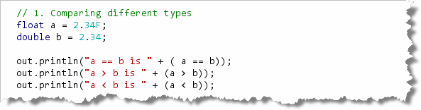
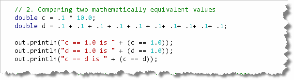
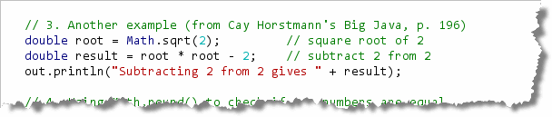
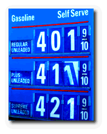
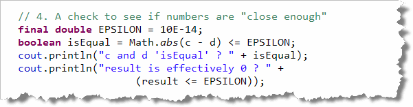
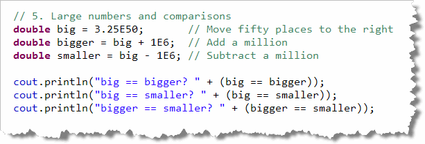

George Boole was one of the most famous mathematicians of the 19th century. Born in 1815 to a working-class family, he was a self-taught child prodigy in both science and Latin. Even though he couldn’t afford to attend college, he became a professor of Mathematics (and later the Dean of Science) at Queens College in Cork Ireland.
Boole’s 1854 paper, "An Investigation Into the Laws of Thought, on Which are Founded the Mathematical Theories of Logic and Probability" detailed the relationship between algebra and logic. This paper was the foundation of the discipline now known as Boolean logic or Boolean algebra, and these are the ideas that underlay much of today's computer technology.
George Boole died on 8th December, 1864 after walking to school in the pouring rain at the end of November. He proceeded to teach in wet clothes, and, as a result he contracted a chest infection which ultimately turned into pneumonia.
His condition was made worse by his wife's attempts to help him. She subscribed to the widely held view that the cure should match the cause and so while George took to his bed, she threw buckets of cold water over him.
Boole is still honored in his native Ireland. Here's a rare picture of one his most famous later disciples, in front of the Boole library in Cork Ireland.
We'll begin this chapter by taking a closer look at the
boolean primitive type, which contains the
two values true and false, and which was
named after George Boole. Then, we'll put the
boolean type to work making decisions.
Note that the boolean primitive type
is all lowercase (just like all of Java's keywords). There is
also a Boolean class, which is a wrapper
class, like the Integer and Double
classes. Finally, when we talk about a true/false value
in the abstract, it is customary to capitalize it, since it
is named after old George. Thus in the text
you'll see the sentences like this:"The logical operators create
Boolean values which you can use as part of a Boolean expression
or store in a boolean variable."
The boolean Type
Recall that Java has four
primitive type families: integers, floating-point numbers,
characters and Booleans. Up to now, you've learned quite
a bit about each of these families except for the
boolean type.
The char type consists of all of the Unicode
values, while the byte type consists of all of
the whole numbers between -128 and 127. The boolean
primitive type is simpler: it consists only of the two literal
values true and false.
As with the other primitive types, you can have boolean
variables and boolean literals. To write the
boolean literal values you simply write true
or false. Make sure you don't accidentally write
True or TRUE; that's not the same thing.
C and C++ programmers are often lulled into a sense of false familiarity by Java's syntax. Boolean types are one of the areas where C and Java differ. In C and C++ Boolean values are convertible to numeric values (0 being false and everything else being true). This is not the case in Java. There is no conversion between numeric types and Boolean types; they are completely separate concepts.
Boolean Variables
You create a boolean variable the same way
you create an int, long, or
double variable: you start with the type,
select a name, and then (optionally) initialize your variable.
Here are two boolean variables definitions:
boolean isEmpty = true;
boolean isDone;
The same rules apply to boolean variables as
apply to integer or floating point variables. If you fail
to initialize a boolean local variable,
then you must assign a value before using the variable
or Java will refuse to compile your code.
| Naming boolean Variables |
When you choose a name for a boolean variable,
try to think about how the variable will be used. Try to
name your variables so that when the value is true,
your conditional expressions can be phrased "naturally"
like this:if (isVisible) ...if (isFinished) ... |
The Relational and Equality Operators
Although boolean literals and boolean variables
can be useful, most of the time, you'll create the
Boolean values used in your program by making use of Java's
relational or equality operators, often in the context of
a selection or iterative conditional statement.
A relational operator compares two values and returns a Boolean value based on a question about the relationship of one value to the other. (That's why they're called the relational operators.) Using a relational operator is a little like the parlor game, "Twenty questions." You use the operator to "ask" if one number is larger than, smaller than, or equal to, another. The operator "responds" with true or false.
Java has six operators which are used to compare numerical values. Here's an illustration of the use of each:
| Example | Result |
|---|---|
| a < b | true if a is less than b; otherwise false |
| a <= b | true if a is less than or equal to b; otherwise false |
| a > b | true if a is greater than b; otherwise false |
| a >= b | true if a is greater than or equal to b; otherwise false |
| a == b | true if a is equal to b, otherwise false |
| a != b | true if a is not equal to b, otherwise false |
Those operators that require two symbols (<=, >=, ==, and !=) must be typed with no space between the two symbols.
Some textbooks reserve the term relational operator
for the first four of these,—and call the last two the equality
operators. Often you'll see all six operators called the relational
operators, with the first four "non-equality" operators called the
inequality operators, instead of the relational operators.
I'll use relational to refer to the whole group,
but will still use equality operators to refer to
== and !=.
Relationship Pitfalls
If you come from another programming language, here are some potential pitfalls you should look for:
- The "is equal to" operator is
==, not=, which is the assignment operator. The error message you'll encounter when you confuse these two is not very informative. Nevertheless, it's better than C++, where you may not even get an error message. - The "not-equals" operator is
!=, not <>. Again, the error message you'll get if you accidently type this is not very helpful. - Make sure you use >= for greater-than or equal, and not =>, which is not a valid symbol. (Of course, the compiler easily catches this one.)
The relational operators act a little differently when applied
to primitive numeric types than when applied to objects
like Strings. Let's look
at the primitive numeric types first, and then, in the next
section, tackle Strings and other objects.
Numeric Relations
Each of the relational operators requires two primitive
numeric operands, and the expression produces a
boolean (true/false) result.
You can usually mix any of the primitive numeric
types, including the char type in
relational expressions. You normally don't have to worry about
mixed-type comparisons, like you do with mixed-type expressions;
for the most part, they will work just like you'd expect.
 Here are some examples typed into DrJava:
Here are some examples typed into DrJava:

As you can see, you can compare characters, integers (both large and small) and floating-point numbers, with wild disregard for the type of each operand. This is completely unlike the assignment operator, where you can't assign adouble
value to a float variable, without a cast.
There is, however, one place where
you must be especially wary: when you compare two
floating-point numbers. If you look at my example here, both the
double variable a and the float
variable f contain the same initial value. Yet when
you compare them for equality, the results are not true.
Floating-point Relations
Even though you can compare numbers without regard for
their types, that doesn't mean that the results will always
be meaningful. As a general rule, you should never
directly compare two floating point numbers using the equality
operators (!=, ==)
because of the "round-off" errors that can occur.
This chapter's code folder contains a short console-mode program, RelationalExamples.java, that illustrates many of the pitfalls that can arise when comparing floating-point numbers. Let's look at a couple of instances:
Different Types
In the first section, two floating-point variables (a and b)
are created and initialized using the values 2.34 and
2.34F which are logically identical.
Then, these values are compared using the relational operators
and the result of that comparison is printed:

If you run the code, you'll see that the two values are never equal, because they have different bit patterns that can't be accurately compared. Many times the comparison will be correct, but often it won't, so you can rely on it.Comparing Calculated Values
Calculations involving floating-point numbers are done in binary, so even if all operands have the same type, you cannot be sure that the bit-patterns will match exactly.
Here are two examples. Look at the variable
definition for c,
which multiplies .1 times 10, yielding (theoretically) 1.0.
Note then the comparison of c with 1.0.
Is it true or false?

I'm sure you realize that this should be true, and that's what Java reports. Well, if that's so, what about the variable d? Obviously, adding .1 ten times is mathematically the same expression as multiplying .1 times 10, yet Java considers this one to be false. Here's a second example from Cay Horstmann's Big Java textbook.

Here he uses theMath.sqrt() function
to get the square root of 2, multiplies the result by itself,
(yielding, theoretically, 2), and then subtracts 2.
This result should be, mathematically, 0. Instead, Java reports
that the answer is 4.440892098500626E-16.
Programmers encountering this behavior for the first time, often think that this is a bug, but it is not. This is not a bug in Java, or its ability to add. This is just the way that binary floating-point numbers work. It's in the nature of the numbers themselves.
Don't compare floating point numbers using the equality operators.

Two Solutions
To accurately compare floating point numbers after a calculation, you'll have to first decide what is "close enough". If you buy gasoline, for instance, you might notice the price often priced to include 9/10 of a cent, but no one ever pays 9/10 of a cent—because our currency doesn't have amounts less than a penny. So, if you were comparing two floating-point numbers where it was important to be accurate only to a penny, you'd want the number 1.256 and 1.257 to be "equal".
Call on Math
Correctly comparing floating point values always requires some judgment on your part; there is no way to make it automatic. What may be "close enough" in one situation may be wildly inappropriate in another. If you are comparing the size of two virus samples, a difference of .000001 is really significant; if you are comparing two calculated prices for an e-shopping application, they are not.
Once you've decided on how many decimals are significant,
a really easy solution is to use the Math.round()
function to generate primitive integer values that can
be compared accurately. Let me give you an example.
Suppose we have the two variables
price1 and price2 in an
e-shopping type of application. We want
to see if they were equal to two decimal points, but
we'd like the numbers rounded. To do this, we can
use this comparison:
boolean priceSame; // variable to hold results
priceSame = Math.round(price1 * 100) == Math.round(price2 * 100);
By multiplying the two variables by 100, we are converting
a price like $ 1.252 into a "cents" value like 125.2. Then,
the Math.round() function returns the nearest
whole number to its argument as a long.
In our case, if price1 contained the value 1.252
and price2 contained the value 1.256,
then Math.round() would turn those into
125 and 126 respectively,
which is what we need for our purposes.
If we need more precision, just increase the
multiplier. You can easily do that with the Math.pow()
function like this:
double decimals;
decimals = Math.pow(10, 2); // 2 decimal places
decimals = Math.pow(10, 4); // 4 decimal places
decimals = Math.pow(10, 12); // 12 decimal places
The EPSILON Solution
Since type double is accurate to about 16 digits of
precision, we can generalize by using a fudge factor (often
called EPSILON) of 10E-14. Using this scheme, two double
values are equal if the absolute value of their difference is
less than or equal to EPSILON). Here's some Java code that
does that for the examples we've seen so far:

When you run this, you'll see that the variables c and d are effectively equal, and that the variable result is effectively 0.Caveats
This doesn't work perfectly if the numbers are very large—in
the millions—in which case you may need to make your EPSILON
factor larger. If the numbers are large enough, your problem
will be the opposite: numbers that are logically different will
be identical when it comes time to compare them.

For instance, if you have adouble
variable containing 3.25E50 and you add a million, (or
subtract a million), you'll still end up with
exactly the same number. A double can
store very, very large and very, very small numbers, but it
both cases, only fifteen or sixteen digits are significant.
Try It Yourself
So, what should you take away from this section? Here are four things you should know how to do, without "looking it up". Use the Interactions Pane for your exploration.
- Do you remember how to create a
booleanvariable? Create one using any name you like (but follow the Java naming conventions). Make sure that it's value is true when you initialize it. - Create two double variables (
aandb) and initialize them by using theMath.random()function. Assigntrueto yourbooleanvariable if a is greater than b, andfalseotherwise. Do not use any selection statements; only relational expressions. - Now, assign
trueto yourbooleanvariable if a is not greater than b, andfalseotherwise. Do not use any selection statements or any Boolean operators, like not (!); only relational expressions. - Assign
trueto your variable ifaandbare equal when compared to 2 decimal places.
When you've done these, you can double-check your work
with this video.


True and False Summary
- True/false values are called Boolean values, named after the 19th century Irish mathematician George Boole who developed the link between logic and math that underlies the development of the digital computer.
- Java's primitive
booleantype has two values, the literalstrueandfalse. TheBoolean(note capitalization) wrapper type contains useful methods for working withbooleanvariables. - In Java,
booleanvalues are not convertible to numeric values, unlike C and C++. - When naming
booleanvariables, the convention is to use names that represent how the variable is used, likeisFinished. - When used in an expression, a relational operator compares
two values and returns a
booleanindicating the relationship of one value to the other. - The two equality operators, equal (
==) and not-equal (!=) can be used accurately with any of the integer types. - The four inequality operators, greater-than (
>), less-than (<), greater-than-or-equal (>=), and less-than-or-equal (<=), can be used with both integers and real numbers. - When comparing real numbers, you cannot always rely on the
relational operators to return an accurate result because of rounding
errors. You need to determine the number of significant places that are
necessary for the comparison, and use multiplication along with
Math.round()to make a meaningful comparison. - Know the number of significant digits in a real number. This is especially important when dealing with very small or very large numbers.